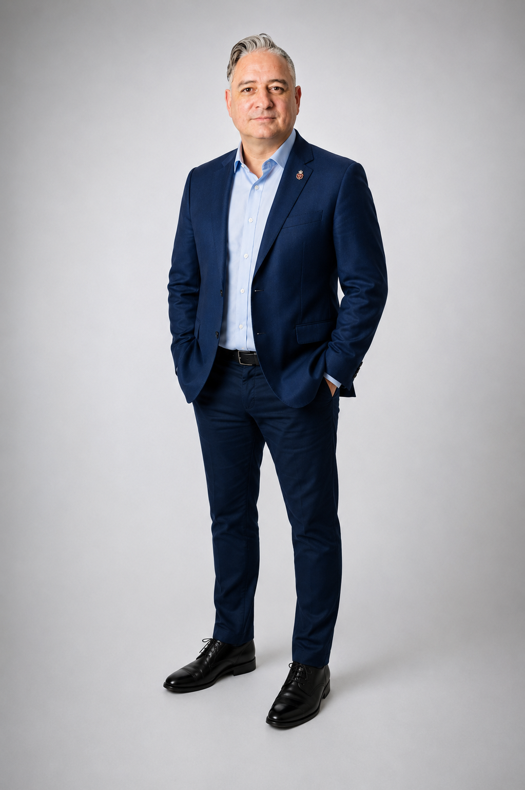

AI, Data, ML, IoT/M2M
Long-range emerging technology credibility, not a recent AI costume.
AIMLIoT/M2M

Ricardo Casanova / AI GTM / Executive adoption
Based between Bangkok and Edmonton. Two decades across AI, big data, ML, IoT/M2M, enterprise, and government-facing complexity.

Signal
Long-range emerging technology credibility, not a recent AI costume.
Complex, multi-stakeholder, regulatory-heavy scenarios across enterprise and government.
Turns technical capability into executive language, buying logic, and market-facing strategy.
Trajectory
AI, big data, ML, IoT/M2M, and enterprise technology work with large organizations and government-facing environments.
Commercial communication, stakeholder alignment, and buyer-ready strategy for complex technology decisions.
Based between Bangkok, APAC, and Edmonton, Canada.
Author of The Eloquence Protocol and active voice on AI adoption, leadership, and trust.
Queen Elizabeth II Platinum Jubilee Medal and federal commemorative pin for community advancement in technology and public service.
AI will be confident, uplifting, but misleading. Winners survive it, adapt, and build systems people can trust.
Operating thesis / AI adoption
Role routes
Strategic accounts, executive adoption, partnerships, and AI value translation.
Customer transformation and sales-solution leadership without pretending to be a hands-on engineer.
Regulated environments and multi-stakeholder modernization where trust and clarity decide the outcome.
Speaking, thought leadership, AMAs, podcasts, and boardroom-ready narrative.
Links